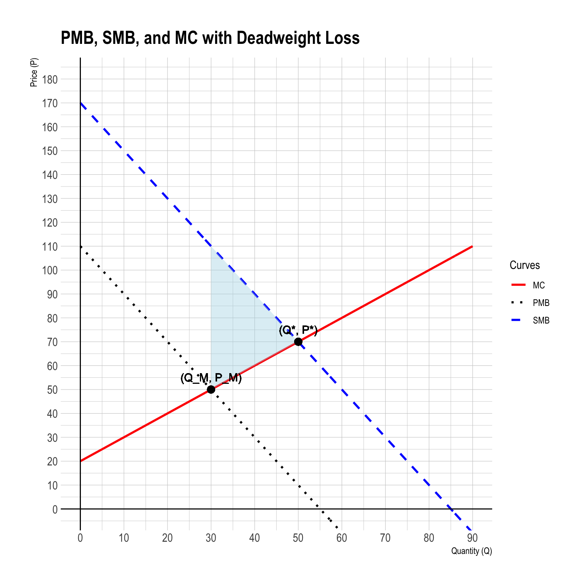

ECON 340 - Make-up Midterm Exam I
SUNY Geneseo, Fall 2025
Section 1. Multiple Choice
Question 1
When a per-unit tax is imposed on sellers, which of the following statements is true?
- The supply curve shifts downward by the amount of the tax.
- The demand curve shifts upward by the amount of the tax.
- The supply curve shifts upward by the amount of the tax.
- Neither demand nor supply shifts; only equilibrium changes.
Show answer
c
Explanation: A tax on sellers increases production cost, shifting supply upward.
Question 2
A tax on raw inputs like crude oil to internalize pollution is called a(n):
- Upstream tax
- Downstream tax
- Output tax
- Marginal tax
Show answer
a
Explanation: An upstream tax is levied early in the production chain on inputs.
Question 3
Matching grants are most effective when:
- Private giving is inelastic
- Public funds leverage private contributions toward shared goals
- Tax rates are high
- Free-riding is impossible
Show answer
b
Explanation: Matching grants work best when they crowd-in private giving.
Question 4
Which statement best captures the equity implication of the Coase Theorem in the presence of well-defined property rights but unequal bargaining power?
- Efficiency ensures fairness as long as property rights are assigned efficiently.
- Assigning rights to polluters lowers both efficiency and fairness because total surplus shrinks.
- Government taxation is always required to restore both efficiency and equity once rights are defined.
- The final allocation of resources is independent of rights, but the distribution of gains depends on who holds them.
Show answer
d
Explanation: Coase Theorem ensures efficiency but not equity; distribution depends on rights.
Question 5
Which side of the market bears more of a tax burden?
- The more elastic side
- The less elastic side
- The side with more substitutes
- The side with higher income
Show answer
b
Explanation: The side with lower elasticity bears more burden.
Question 6
Elinor Ostrom’s research primarily challenged which prevailing belief?
- Only privatization can solve environmental externalities.
- Markets are the most efficient governance system.
- Common property is inherently inefficient.
- State control maximizes social welfare.
Show answer
c
Explanation: Ostrom showed communities can manage commons sustainably without privatization/state control.
Question 7
When aggregating marginal benefits for a public good, economists use:
- Horizontal summation
- Vertical summation
- Marginal cost integration
- Pareto aggregation
Show answer
b
Explanation: Public goods require vertical summation—add willingness to pay at each quantity.
Question 8
The additionality criterion in Payments for Ecosystem Services (PES) programs ensures that:
- Payments go only to landowners with legal titles
- Forests are always replanted after harvest
- The payment causes real behavioral change compared to the baseline
- Contracts last for more than five years
Show answer
c
Explanation: Additionality means outcomes must be above what would have happened anyway.
Section 2. Filling-in-the-Blanks
Question 9
_________________________ refers to confirming that forests were genuinely conserved, avoiding fraud or double counting.
Show answer
Verification
Explanation: Verification ensures projects truly deliver conservation outcomes and prevents double counting.
Question 10
_________________________ represents the extra return to a resource above the minimum payment necessary to keep it in use.
Show answer
Economic rent
Explanation: Economic rent is the surplus above the minimum amount required to maintain current use.
Question 11
Market failure in public goods arises on the _________________________ side of the market.
Show answer
demand
Explanation: Public goods suffer from demand-side market failure because individuals under-reveal willingness to pay.
Section 3. Short Answers
Question 12
Part A
Briefly define rivalry and excludability and explain how these concepts help classify common property-right regimes.
Write approximately 3–5 sentences.
Show answer
Answer:
Rivalry refers to whether one person’s use reduces the amount available to others, while excludability refers to whether access can be restricted. These two characteristics determine whether a good is private, public, common-pool, or club-type. Common property resources (e.g., fisheries or grazing land) are typically rival but non-excludable. This classification highlights why managing them is difficult: people can overuse them without bearing full consequences.
Part B
Explain how common property can fail, using an example.
Write approximately 3–5 sentences.
Show answer
Answer:
Common property can fail when users lack coordination and exploit the resource faster than it can regenerate, leading to depletion. A classic example is open-access fisheries, where each fisher has an incentive to catch as much as possible before others do. This results in overfishing and declining stocks. Because no single individual has secure rights, the resource becomes a race to the bottom.
Part C
Explain how common property can succeed, using an example.
Write approximately 3–5 sentences.
Show answer
Answer:
Common property can succeed when local users create clear rules, monitor resource use, and maintain strong social norms that support cooperation. In the Swiss Alpine Meadows, grazing lands have been treated as common property for centuries, with user associations setting strict stocking rules. Stable membership and long-standing relationships foster reciprocity and trust, which discourages overuse. As a result, compliance remains high and meadow productivity is sustained across generations.
Part D
Discuss how government policy can help prevent the overuse of common-pool resources. Provide one concrete policy example and explain how it changes user incentives.
Write approximately 3–5 sentences.
Show answer
Answer:
Government policies can reduce overuse by restricting access, regulating use, or aligning private incentives with social goals. A concrete example is Individual Transferable Quotas (ITQs) in fisheries, where each fisher receives a share of the allowable catch. This turns the resource into a managed system where overfishing becomes costly and long-term sustainability becomes profitable. By giving fishers rights and responsibilities, the policy aligns incentives with conservation.
Question 13
Part A
What is the free-rider problem in Coasean negotiations involving multiple parties?
Write approximately 3–5 sentences.
Show answer
Answer:
The free-rider problem arises when many affected parties rely on others to pay for the negotiated solution. In Coasean bargaining, individuals may hope that others will contribute compensation to reduce pollution or secure a more efficient outcome. As more people free-ride, the total contribution falls short. Coordination becomes difficult, and the bargaining process collapses, preventing efficient agreements.
Part B
How does the “bargaining breakdown” effect (holdout effect) further complicate collective agreements?
Write approximately 3–5 sentences.
Show answer
Answer:
The holdout effect occurs when a single party delays or refuses to agree unless they receive a larger share of the benefits. Knowing their participation is essential, they strategically hold out for more. This creates bargaining gridlock and prevents timely agreements. Even if all parties collectively value reaching an efficient outcome, strategic behavior undermines cooperation and destroys surplus.
Part C
Beyond the free-rider problem and the holdout effect, identify and discuss at least two additional limitations of the Coase Theorem. Explain how these factors can prevent Coasean bargaining from achieving efficient or equitable environmental outcomes.
Write approximately 5–7 sentences.
Show answer
Answer:
Several additional limitations hinder the effectiveness of Coasean bargaining:
Ecosystem and nonhuman impacts
Many environmental damages fall on ecosystems, wildlife, and nonhuman species that cannot express preferences or negotiate. Without clear rights-holders, damages remain unrepresented, leading to underprotection of habitats and biodiversity.Future generations cannot participate
Environmental problems such as climate change, soil degradation, and biodiversity loss impose costs on future individuals who do not have a voice in current bargaining. As a result, Coasean solutions tend to prioritize short-term benefits over long-term sustainability.Equity and power imbalances
Bargaining outcomes depend on economic resources and influence. Poor communities may lack the ability to “buy out” polluters or negotiate for safer environmental conditions, leading to inequitable outcomes even when the result is technically efficient. Wealthier groups can impose their preferences simply because they can afford to do so.
Taken together, these limitations prevent Coasean bargaining from reliably producing efficient, fair, or environmentally sustainable outcomes, especially for large-scale ecological and intergenerational challenges.
Section 4. Analytical Modeling & Critique
Question 14
Consider a perfectly competitive market for solar energy that generates positive externalities such as reduced carbon emissions and knowledge spillovers.
The private marginal benefit (PMB) and marginal cost (MC) of solar production are:
\[ \begin{aligned} PMB(Q) &= 110 - 2Q,\\ MC(Q) &= 20 + Q \end{aligned} \]
and the external marginal benefit (EMB) is: \[ EMB(Q)=60. \]
Part A
Find the market equilibrium quantity \(Q_M\) and price \(P_M\). Show all steps.
Show answer
Set \(PMB(Q)=MC(Q)\):
\[ 110-2Q = 20+Q \;\Rightarrow\; 90 = 3Q \;\Rightarrow\; Q_M = 30. \]
Market price: \[ P_M = MC(30) = 20+30 = 50 \quad(\text{equals } PMB(30)=110-2\cdot30=50). \]
Part B
Compute the social marginal benefit (SMB) function.
Show answer
\[ SMB(Q) = PMB(Q) + EMB(Q) = (110-2Q) + 60 = 170 - 2Q. \]
Part C
Find the socially optimal output \(Q^*\) and price \(P^*\).
Show answer
Set \(SMB(Q)=MC(Q)\):
\[ 170-2Q = 20+Q \;\Rightarrow\; 150 = 3Q \;\Rightarrow\; Q^* = 50. \]
Socially efficient price (on the cost side): \[ P^* = MC(50) = 20+50 = 70 \quad(\text{and } SMB(50)=70). \]
Part D
- Graph the \(PMB\), \(SMB\), and \(MC\) curves.
- Label both the market equilibrium \((Q_M, P_M)\) and the socially optimal equilibrium \((Q^*, P^*)\).
- Shade and label the deadweight loss (DWL) from the positive externality.
Show answer
Key labels if drawn later:
- \(PMB: P=110-2Q\); \(SMB: P=170-2Q\); \(MC: P=20+Q\).
- Market: \((Q_M,P_M)=(30,50)\); Social: \((Q^*,P^*)=(50,70)\).
- DWL is the triangle between \(SMB\) and \(MC\) from \(Q=30\) to \(Q=50\), with area
\(\frac{1}{2}\times(50-30)\times[SMB(30)-MC(30)] = \tfrac12\times20\times60 = 600.\)
Part E
How does the concept of public goods relate to this example?
Show answer
Solar energy creates non-rival, non-excludable benefits like cleaner air and climate stability. Because individuals and firms cannot fully exclude others from these benefits, many free ride on others’ investments. As a result, private decisions based on \(PMB\) understate true social value \(SMB\), yielding underinvestment relative to the social optimum.
Part F
Explain how subsidy programs (e.g., per-kWh payments) help overcome the public-goods problem and how the optimal subsidy mirrors a Pigouvian tax.
Show answer
A per-unit subsidy raises private incentives toward the social benefit by effectively adding the external marginal benefit to private marginal benefit. Setting the subsidy equal to \(EMB\) makes firms/consumers internalize the externality: the new condition \(PMB+s = MC\) reproduces \(SMB=MC\). This mirrors a Pigouvian tax (which subtracts external marginal damage for negative externalities), but here it adds the missing positive spillover.
Part G
Calculate the optimal per-unit subsidy that achieves the social optimum.
Show answer
\[ s^* = EMB = 60. \]
Verification: with subsidy \(s\), equilibrium satisfies \(PMB(Q)+s=MC(Q)\Rightarrow 110-2Q+60=20+Q\Rightarrow Q=50=Q^*.\)
Part H
Compute the market price with the subsidy—the price paid by consumers and the price received by producers.
Show answer
At \(Q^*=50\):
- Consumer price: \(P_c = PMB(50) = 110-2\cdot50 = 10.\)
- Producer price: \(P_p = MC(50) = 70 = P_c + s^* = 10 + 60.\)
Part I
Compute the subsidy expenditure and the change in total welfare from implementing the policy.
Show answer
- Subsidy expenditure: \(s^* \times Q^* = 60 \times 50 = 3{,}000.\)
- Change in total welfare (including external benefits and net of fiscal cost): equals the eliminated DWL = \(600\).
Check via components:
Baseline (\(Q=30\)): \(CS=900,\; PS=450,\; EB=60\cdot30=1{,}800\Rightarrow W=3{,}150.\)
With subsidy (\(Q=50\)): \(CS=2{,}500,\; PS=1{,}250,\; EB=60\cdot50=3{,}000,\; GE=3{,}000\Rightarrow W=2{,}500+1{,}250+3{,}000-3{,}000=3{,}750.\)
\(\Delta W = 3{,}750-3{,}150 = \boxed{600}.\)